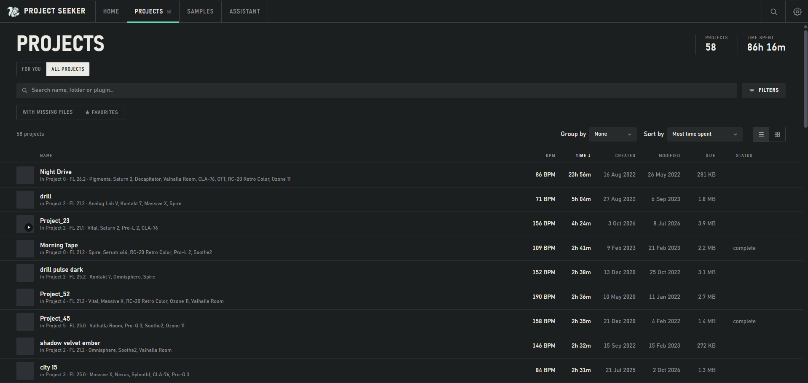

Find the session
Search names, plugins, samples or BPM. Explore your library as a list or through the Bubble map.
FOR THE IDEAS YOU ALMOST FORGOT
That beat from last summer. That session with the perfect sound. Find it, listen to it, and pick up where you left off.
FREE & OPEN SOURCE · FL STUDIO + ABLETON LIVE
01 / BACK TO YOUR MUSIC
One place for your projects, audio exports and unfinished ideas.

Demo library. Click the image to see it full size.
Search names, plugins, samples or BPM. Explore your library as a list or through the Bubble map.
Listen to associated audio exports without opening your DAW. The player uses your exports; it does not render project files.
Collect ideas into albums and playlists, then reopen a project in your installed DAW. Original files stay in place.
02 / YOUR NEXT SESSION STARTS HERE
Free to use. No subscription. Start with a folder of projects.
Installs without administrator rights. Requires Microsoft Edge WebView2 Runtime.
Installation & SmartScreen →Open the DMG and drag the app to Applications. This Mac build uses the MIT license.
Mac installation →Application code, synthetic tests and build scripts. Use, modify and share under the GPL.
Read the license →Compare the installer’s SHA-256 with the value below. In PowerShell, run:
Get-FileHash .\ProjectSeeker-setup-0.9.exe -Algorithm SHA2567f7dbd1bfa3853b070649e2a6fabe162fff0e160c266e8ed12020a7209a1c15e03 / GOOD TO KNOW
A few things before you dive in.
The installer is not digitally signed. Windows may show “Windows protected your PC”; that warning alone does not mean malware was detected. Check that you downloaded from this project’s page and compare the SHA-256 above. To continue, select “More info” → “Run anyway”, if Windows offers that option.
Run the installer, open Project Seeker and choose a folder containing .flp or .als projects. After the scan, search your library and select a project. Associate an audio export to listen, or reopen the project in FL Studio or Ableton Live.
Choose Apple Silicon for an M-series Mac, or Intel for an Intel Mac. Open the DMG and drag Project Seeker to Applications. The app is not signed with an Apple Developer ID or notarized. If macOS blocks opening it, verify the download’s origin and SHA-256, then use System Settings → Privacy & Security → Open Anyway, if available. Automated Mac checks do not replace testing on your own Mac.
Library scanning reads your original projects and samples without moving, renaming or saving them. Albums, playlists and notes are stored in the app. The optional Reviver recovery tool is in beta and disabled by default.
No. Scanning, browsing and playback work offline without an account. The assistant is optional. If you choose an external AI provider, your messages go to that provider; sharing library metadata requires separate consent.
Project Seeker is available in English, Italian, French and German. Choose your language in the app’s settings.
You already made something worth coming back to.
Get Project Seeker